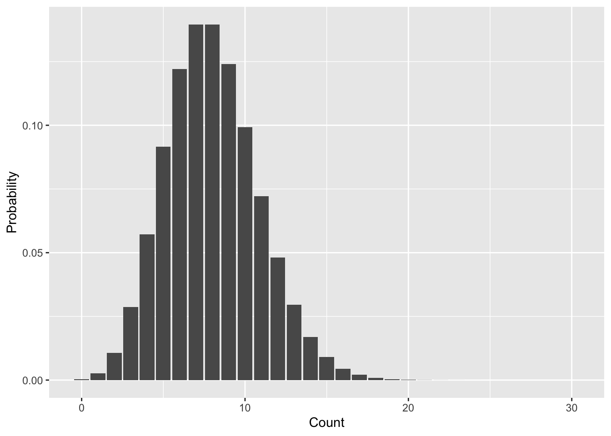

# setup parameters
m <- 0.1
N <- 10
dbinom(1, size = N, prob = m)[1] 0.3874205This lab will introduce you (or provide a refresher) to working with common probability distributions in R. You can download the template .qmd file for this lab here:
The template will prompt you to work through the following sections.
There are a multitude of probability distributions available to use through R, not to mention a whole multitude more via contributed packages. R functions related to distributions and random variables come in four varieties:
d functions (e.g. dnorm for the normal distribution) provide access to probability mass functions (PMF) for discrete random variables and probability density functions (PDF) for continuous random variablesp functions (e.g. pnorm) provide access to probability calculations over ranges of valuesq functions (e.g. qnorm) allow us to calculate quantiles of probability distributionsr functions (e.g. rnorm) allow us to draw random numbers from probability distributionsR chooses to encode both PMFs and PDFs as d functions so it is on us as users to know whether the output of a d function is a true probability (for PMFs) or a probability density (for PDFs).
The p functions either sum up probabilities from PMFs or calculate areas under PDF curves, so in any application we always get a probability from a p function. Technically these p functions represent cumulative mass (CMF) or cumulative density functions (CDF) because they calculate how much probability has “accumulated” across given values of the random variable associated with the probability distribution.
With that intro out of the way we will work through specific distributions.
Let’s return to the example of the number of dispersal events over a fixed number of time steps from the simplified game version of the Unified Neutral Theory of Biodiversity that we previously discussed. For simplicity, let’s work with multiples of 10 for probabilities and numbers of time steps: \(\mathbb{P}(\text{dispersal}) =\) m = 0.1 and number of time steps = N = 10. What is the probability of observing exactly 1 dispersal event given these conditions?
That is a job for the binomial distribution which R refers to as binom with all the distributions functions: dbinom, pbinom, qbinom, rbinom. We want a probability of one discrete (think PMF) value, so we can use dbinom
# setup parameters
m <- 0.1
N <- 10
dbinom(1, size = N, prob = m)[1] 0.3874205Notice how we use dbinom (and indeed how we will use any d function):
With a binomial distribution we often refer to the random variable as the “number of successes,” in this case then number of dispersal events is number of successes. The number of observations is often called “number of trials,” in this case then number of trials is number of game iterations.
You’ll notice the probability of 1 success in 10 trials is 0.3874205 but we set the probability \(\mathbb{P}(\text{dispersal}) = m = 0.1\). Why are they not the same? Or at least not an obvious multiplication or addition of one another? The reason is counting. The probability of exactly 1 success in 10 trials consists of many ways to arrive at that outcome. If 0 is no success and 1 is success, here are just a few of the ways we can get exactly 1 success:
\[ \begin{aligned} &\text{1, 0, 0, 0, 0, 0, 0, 0, 0, 0} \\ &\text{0, 1, 0, 0, 0, 0, 0, 0, 0, 0} \\ &\text{0, 0, 1, 0, 0, 0, 0, 0, 0, 0} \\ &\cdots \end{aligned} \]
The counting gets increasingly complex with higher numbers of successes and trials. Luckily, the *binom functions take care of that for us. Let’s go over the family.
dbinomCalculate the probability of 0, 1, 2, and 3 successes out of 10 trials with a probability of success equal to 0.2.
pbinomUsing the same parameters calculate the probability of observing 3 or less successes, i.e., \(\mathbb{P}(\text{successes} \leq 3)\).
First use your calculations in the previous step to arrive at the answer. Next figure out how to use the pbinom function to arrive at the same answer.
Finally use the pbinom function to calculate the probability of observing greater than 3 successes using the same parameters as before.
qbinomThe q function turns this calculation around. Rather than calculate the probability for a number of successes \(\leq n\), qbinom figures out what value, call it \(q\), the random variable needs to take on such that we get back a specific probability \(p\): so all q functions solve this equation for \(q\): \(\mathbb{P}(n \leq q) = p\).
Use qbinom to figure out what value cuts the binomial distribution, as previously parameterized, in half (i.e. 0.5 probability).
rbinomThe r functions let us draw random numbers from probability distributions. Give it a try with the same binomial distribution we’ve been working with: draw 20 numbers.
Now let’s try to visualize the shape of the binomial PMF but with a histogram of random numbers. We need many more draws than 20 to make the histogram look close to the actual PMF, let’s go for 10,000. Keep in mind that to use ggplot we need to store the random numbers in a data.frame or tibble.
The Poisson distribution is very useful in ecology—it is often used to model the probability distribution of counts, for example numbers of individuals or numbers of species. It has only one parameter, the mean value, often called \(\lambda\). Let’s use dpois to get a sense of the shape of the distribution by visualizing the PMF. Because we use dpois to calculate the actual probabilities we won’t use a histogram but rather a bar plot.
# the range of random variable values we'll
# calculate probabilities for
nn <- 0:30
# the Poisson parameter lambda for the mean value
la <- 8
# store range of values and probabilities in data.frame
pois_pmf <- data.frame(n = nn, d = dpois(nn, la))
ggplot(pois_pmf, aes(n, d)) +
geom_bar(stat = "identity") +
xlab("Count") +
ylab("Probability")
Let’s walk through all the pois functions like we did with binom.
dpoisUse dpois with the same parameters we’ve been using to calculate the probability of the random variable being equal to each of 7, 8, 9, and 10.
ppoisUse ppois to calculate the probability \(\mathbb{P}(7 \leq n \leq 10)\) from the Poisson distribution we’ve been working with. Note: you can confirm you have the right answer using the previous calculation with dpois, but make sure you also figure out how to use ppois.
qpoisUse qpois to find the 25%, 50%, and 75% quantiles of the Poisson distribution with \(\lambda = 8\) that we’ve been working with.
rpoisMake a histogram using rpois that should look similar to the PMF in Figure 8.1
The one downside of the Poisson distribution is that with only one parameter \(\lambda\), it can have a heard time mimicking real world data. In ecology in particular counts are often “zero-inflated,” meaning that compared to the Poisson distribution there are too many 0 counts. One solution is the negative binomial distribution which, in addition to a parameter for the mean, has a parameter \(k\) (called size in R) that can shift the weight of probabilities more toward 0 and small values. When \(k\) is infinite (practically speaking just a large number like 10,000 will do) the negative binomial is mathematically equivalent to the Poisson distribution. But any smaller value of \(k > 0\) will add extra probability for small values of the random variable.
The mean parameter for the negative binomial is often called \(\mu\) and, again, the parameter that shifts the balance toward small values is \(k\), though inside R’s nbinom functions they call it size. Let’s again walk through all the nbinom functions.
dnbinomTo prove the point about zero-inflation, let’s compare the negative binomial with mean 8 to the Poisson with mean 8. Specifically let’s look at the probability \(\mathbb{P}(n = 0)\) for both. We will need to select values for the \(k\) = size parameter as well, let’s try values of 0.1, 1, and 2. Here is how dnbinom works for \(k = 0.1\):
# remember size = k
dnbinom(0, mu = 8, size = 0.1)[1] 0.644394Now you take it from here!
pnbinomUse pnbinom to calculate the probability \(\mathbb{P}(n \leq 4)\) with the three different values of \(k\) we’ve been working with.
qnbibomUse qnbibom to find what value cuts the probability distribution in half for each of the \(k\) values we’ve been working with.
rnbinomAdd to the histogram you made using rpois another histogram derived from rnbinom with \(k\) = size = 1. You can use different fills with transparent colors or faceting, depending on which you prefer.
The normal distribution is a workhorse of statistics, as we will see. It is often the presumed distribution for any continuous random variable. That assumption is not without precedent (as we will see in the next lab). For now we will just get antiquated with the distribution.
A normal distribution has two parameters: again it has a parameter for the mean, often referred to as \(\mu\), but simply called mean in R’s norm functions. It also has a parameter for the variance of the distribution \(\sigma^2\). We often think of the standard deviation \(\sigma\) instead of the variance because it is either to think in terms of linear numbers rather than squared numbers. R’s norm functions use the standard deviation and call it sd.
dnormThe probability density function (PDF) of a normal random variable is not strictly speaking probability. But the shape of the PDF is still helpful for thinking about which values of the random variable are more probable than others.
Use dnorm with mean = 2 and sd = 1 to make a visualization of the PDF. Note: we are not working with a PMF, so geom_bar is not the correct choice here; instead, try geom_line.
pnormFind the value that cuts a normal distribution in half when mean = 2, sd = 1 compared to mean = 2, sd = 3. Do you expect those 50% quantile values to be the same or different? Now compare the 50% quantile values for normal distributions with mean = 2, sd = 1 versus mean = 4, sd = 1.
rnormMake a histogram using rnorm with a mean and sd of your choosing.